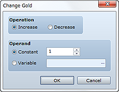
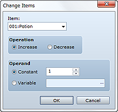
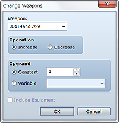
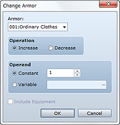
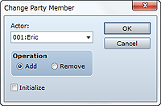

Increases/decreases the party's gold.
Specify the desired operation (Increase/Decrease).
Specify the amount of increase/decrease. To increase/decrease party gold by a fixed amount, select Constant and then enter the amount. To specify an amount using a variable value, select Variable and then specify the variable to look up.

Increases/decreases the quantity of an item the party possesses. If the quantity of the item ends up outside a range between 0 and 99 as a result of this operation, it will be adjusted to 99 (maximum quantity allowed) or 0 (not possessed) as the case may be.
Specify the item for which to change the quantity.
Specify the desired operation (Increase/Decrease).
Specify the amount of increase/decrease. To increase/decrease the item quantity by a fixed amount, select Constant and then enter the amount. To specify an amount using a variable value, select Variable and then specify the variable to look up.

Increases/decreases the quantity of a weapon the party possesses. If the quantity of the weapon ends up outside a range between 0 and 99 as a result of this operation, it will be adjusted to 99 (maximum quantity allowed) or 0 (not possessed) as the case may be.
Specify the weapon for which to change the quantity.
Specify the desired operation (Increase/Decrease).
Specify the amount of increase/decrease. To increase/decrease the weapon quantity by a fixed amount, select Constant and then enter the amount. To specify an amount using a variable value, select Variable and then specify the variable to look up.
Selecting Include Equipments will also make the weapons actors have equipped subject to increase/decrease.

Increases/decreases the quantity of armor the party possesses. If the quantity of the armor ends up outside a range between 0 and 99 as a result of this operation, it will be adjusted to 99 (maximum quantity allowed) or 0 (not possessed) as the case may be.
Specify the armor for which to change the quantity.
Specify the desired operation (Increase/Decrease).
Specify the amount of increase/decrease. To increase/decrease the armor quantity by a fixed amount, select Constant and then enter the amount. To specify an amount using a variable value, select Variable and then specify the variable to look up.
Selecting Include Equipments will also make the armor actors have equipped subject to increase/decrease.

Change party actors. You can even change party members so that there are zero actors in the party. In that case, the player will no longer be displayed on the map.
Specify the actor subject to the change.
Specify the desired operation (Add/Remove).
Selecting this option uses the values in the Database for the settings applied when adding an actor.